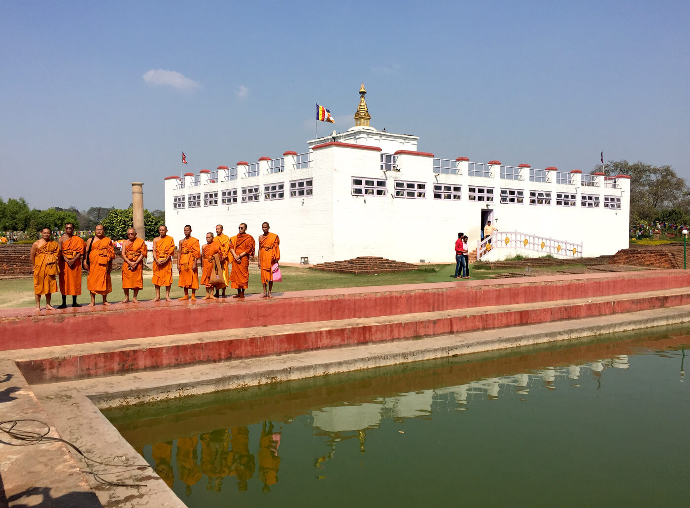

Welcome
Nepal with rich ancient cultures set against the most dramatic scenery in the world is a land of discovery and unique experience. For broad minded individuals who value an experience that is authentic and mesmerizing, Nepal is the ideal destination. Come and revel in the untouched and the undiscovered and uncover yourself.
It is unsurpassed that the sheer diversity Nepal boasts, from steamy jungle and Terai to the icy peaks of the world’s highest mountains means that the range of activities on offer. Trekking, mountaineering, rafting in spectacular scenery are just three things Nepal is famous for. Activities as diverse as Elephant Polo and a micro-light flight through the Himalayas show that in Nepal, the only boundary is your imagination. With 15 National & Wildlife Parks (two are UNESCO Heritage sites) Nepal is one of the last places on earth you can spot the Asiatic rhinoceros and the Royal Bengal Tiger.
For many, Nepal’s greatest attraction is its people. The traditions and famous hospitality of its many different groups are indeed a major part of what makes Nepal so special. From remote mountain villages to medieval hill-towns and the ancient cities of the Kathmandu Valley, the people of Nepal are always welcoming. Come and experience the strong and unique flavors of Nepalese cuisine, prepared with love and a depth of flavor or join in and celebrate at one of the many festivals year round. In fact, with more festivals than days of the year, there is nowhere else in the world that can offer as many festivities as Nepal.
Tourism is one of the mainstay of Nepalese economy. It is also a major source of foreign exchange and revenue. Possessing 8 of the 10 highest mountains in the world, Nepal is a hotspot destination for mountaineers, rock climbers and people seeking adventures. The Hindu, Buddhist and other cultural heritage sites of Nepal, and around the year fair weather are also strong attractions.
Nepal is the country of the Mount Everest, the highest mountain peak in the world, and the Birthplace of Gautama Buddha- Lumbini. Mountaineering and other types of adventure tourism and ecotourism are important attractions for visitors. There are other important religious pilgrimage sites throughout the country for the followers of various sects and religions.
According to statistics from Nepal Tourism Board (NTB), a total of 598,204 foreign tourists entered the country via aerial route in 2012. The government of Nepal declared 2011 to be Nepal Tourism Year, and hoped to attract one million foreign tourists to the country during that year. The tourist industry is seen as a way to alleviate poverty and achieve greater social equity in the country.
Mount Everest

Mount Everest is the highest mountain in the world, with an elevation of 8,848 meters (29,029 feet) above sea level. It is located in the Himalayan mountain range on the border between Nepal and China, and is a popular destination for mountain climbers.
The first recorded attempt to climb Mount Everest was made by British mountaineers George Mallory and Andrew Irvine in 1924. Although they were last seen alive just below the mountain's summit, it is not known whether they actually reached the top. The first successful ascent of Mount Everest was made by Sir Edmund Hillary of New Zealand and Tenzing Norgay, a Sherpa of Nepal, in 1953.
Since then, Mount Everest has become a popular destination for mountain climbers, although it is also considered one of the most dangerous. The high altitude and extreme weather conditions make the climb to the summit very challenging, and many people have lost their lives while attempting to reach the top.
Mount Everest Base Camp is a popular destination for trekkers and mountaineers visiting the Himalayas. Located at an elevation of 5,364 meters (17,598 feet) above sea level, it is the starting point for many expeditions to the summit of Mount Everest.
There are two base camps on opposite sides of Mount Everest: the South Base Camp in Nepal and the North Base Camp in Tibet. The South Base Camp is the more popular of the two, and is located about a two-week trek from the town of Lukla in Nepal. The trek to the base camp is known for its stunning views of the Himalayan mountains and the Sherpa culture of the region.
At the base camp, climbers and trekkers can acclimatize to the high altitude and prepare for the climb to the summit. The camp is equipped with basic amenities such as toilets, medical facilities, and food and water supplies. It is also home to a number of support staff and sherpas who assist the climbers.
Trekking to the Mount Everest Base Camp is a challenging but rewarding experience. It offers the chance to experience the beauty and culture of the Himalayas, as well as the opportunity to witness firsthand the preparations for a climb to the highest point on Earth.
Pashupatinath Temple

The Pashupatinath Temple is a Hindu temple complex located in Kathmandu, Nepal. It is dedicated to Pashupatinath, a manifestation of the Hindu god Shiva, and is considered one of the most sacred Hindu temples in Nepal. The temple is located on the banks of the Bagmati River and is a UNESCO World Heritage Site.
The Pashupatinath Temple was built in the 5th century and has undergone several renovations over the centuries. It is a pagoda-style temple with a gilded roof and four sides covered in silver. The main temple is surrounded by other smaller temples, ashrams, and shrines dedicated to various Hindu deities.
The temple is a popular site for Hindu pilgrims and tourists, who come to pray and offer puja (worship) to Pashupatinath. The temple is also known for its cremation ceremonies, which are conducted on the banks of the Bagmati River. It is believed that being cremated at Pashupatinath Temple will bring the soul closer to moksha (liberation).
In addition to its religious significance, the Pashupatinath Temple is also an important cultural and architectural site. It is an excellent example of traditional Nepali temple architecture and is adorned with intricate carvings and sculptures. The temple complex is also home to a number of cultural and religious festivals throughout the year.
Janaki Temple

The Janaki Temple, also known as the Janakpur Dham Temple, is a Hindu temple located in Janakpur, Nepal. It is dedicated to the Hindu deity Sita, the wife of Lord Rama and the central figure of the Hindu epic Ramayana. The temple is considered one of the holiest sites in Nepal and is a major tourist attraction.
The Janaki Temple was built in the 19th century and is a blend of Mughal and Shikhara-style architecture. It is decorated with intricate carvings and sculptures and is surrounded by a large courtyard. The temple is known for its beautiful marble carvings and its many shrines and statues of Sita and other Hindu deities.
The Janaki Temple is an important religious site for Hindus, particularly those who follow the Vaishnavite tradition. Pilgrims come to the temple to offer puja (worship) to Sita and seek her blessings. The temple is also a popular tourist destination and is often visited as part of a cultural or religious tour of Nepal.
In addition to its religious significance, the Janaki Temple is also an important cultural and architectural site. It is a beautiful example of traditional Nepali temple architecture and is a testament to the cultural and religious traditions of Nepal.
Pokhara

Pokhara is a city located in the western part of Nepal, known for its natural beauty and cultural attractions. The city is situated in the Gandaki Pradesh region, and is the headquarters of the Kaski District. It is also the gateway to the Annapurna region, which is a popular destination for trekking and mountaineering.
One of the most notable attractions in Pokhara is its many lakes, including Phewa Lake, Begnas Lake, and Rupa Lake. These lakes offer a variety of recreational activities, such as boating, fishing, and swimming. The city is also home to a number of caves, including the Mahendra Cave, the Bat Cave, and the Gupteshwor Cave. These caves offer a unique and exciting experience for visitors, with their underground waterfalls and stalactites.
In addition to its natural beauty, Pokhara is also home to a number of cultural and historical sites. The International Mountain Museum is a popular destination for visitors, showcasing the history and culture of mountain climbing in Nepal. The Gurkha Memorial Museum is another popular attraction, showcasing the history and traditions of the Gurkha people. The Pokhara Museum is a third cultural attraction, showcasing the history and culture of the region.
Overall, Pokhara is a city with a rich history and culture, and is a popular destination for tourists who want to experience the natural beauty and cultural attractions of Nepal. Whether you're interested in lakes, caves, or cultural sites, Pokhara has something for everyone.
Lumbini

Lumbini is a small town located in Nepal, known as the birthplace of Lord Buddha. The town is a popular destination for tourists who are interested in Buddhism and the teachings of Lord Buddha.
One of the main attractions in Lumbini is the Mayadevi Temple, which is believed to be the birthplace of Lord Buddha. The temple is a UNESCO World Heritage Site, and is a popular destination for Buddhist pilgrims from around the world. The temple is surrounded by a beautiful garden, which is home to a number of other temples and monasteries.
In addition to the Mayadevi Temple, Lumbini is home to a number of other cultural and historical attractions. The Lumbini Museum is a popular destination for tourists, showcasing the history and culture of the region. The Ashoka Pillar is another important attraction, built by the Emperor Ashoka in the 3rd century BC to mark the birthplace of Lord Buddha.
Lumbini is also a popular destination for nature lovers, with a number of parks and gardens located in the town. The Lumbini Peace Park is a popular destination, featuring a beautiful lake and a variety of plants and flowers. The park is also home to a number of meditation and yoga centers, offering visitors the opportunity to relax and rejuvenate.
Overall, Lumbini is a beautiful and peaceful destination, offering a unique blend of cultural and natural attractions. Whether you're interested in Buddhism, history, or nature, Lumbini has something for everyone.